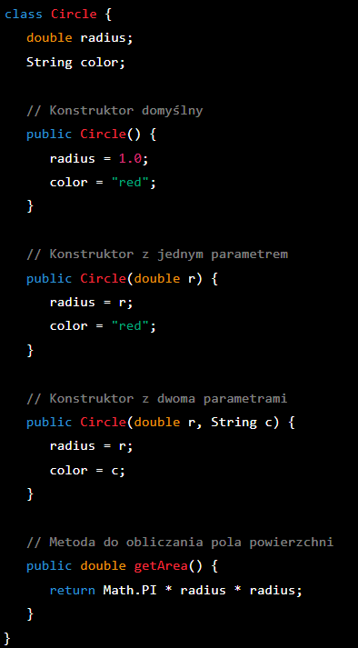

W tym przykładzie stworzyliśmy klasę Circle, która posiada trzy konstruktory: domyślny,
z jednym parametrem i z dwoma parametrami. Klasa ta również zawiera metodę getArea,
która oblicza pole powierzchni koła na podstawie promienia.

W klasie Main tworzymy trzy obiekty typu Circle za pomocą różnych konstruktorów i wyświetlamy pole powierzchni dla każdego z nich.